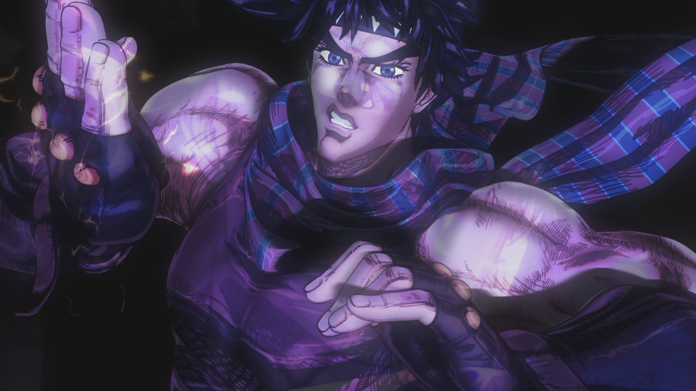
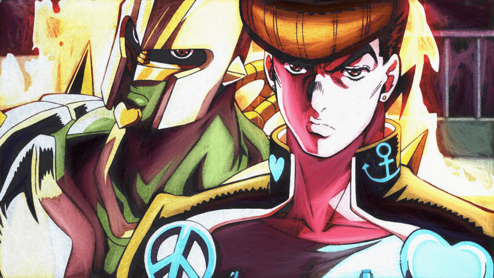
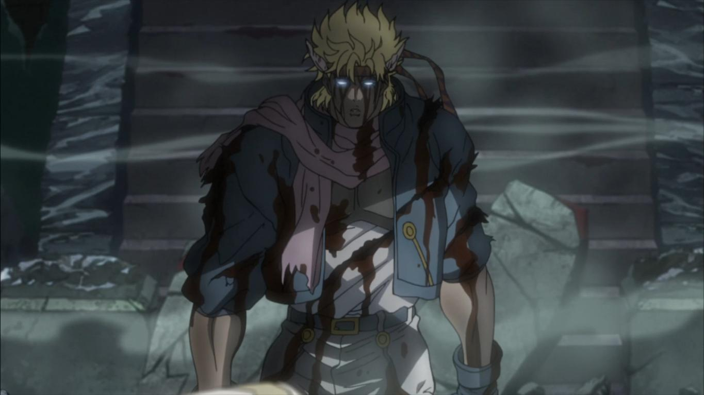
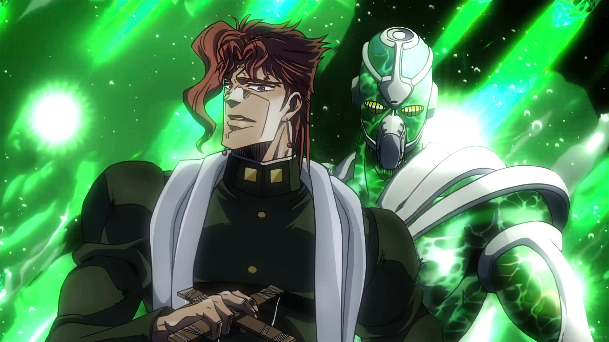

Jonathan
Jonathan Joestar é o protagonista de Phantom Blood e o primeiro JoJo da série JoJo's Bizarre Adventure. Filho de George Joestar I, Jonathan é um homem honesto, gentil e positivo, cuja vida está repleta de tragédias após conhecer seu irmão mais velho adotivo, Dio Brando. Em sua batalha contra Dio, Jonathan se torna um usuário do Hamon sob a tutela de Will Anthonio Zeppeli. .

Joseph
Joseph Joestar é o protagonista de Battle Tendency e um aliado em Stardust Crusaders e Diamond is Unbreakable. Ele é o segundo JoJo da série JoJo's Bizarre Adventure. Ele também é o segundo JoJo mais recorrente da série depois de seu neto Jotaro Kujo e é um de seus personagens mais conhecidos. Joseph é um usuário natural do Hamon e eventual usuário do Stand, empunhando o Stand fotográfico psíquico, Hermit Purple. Joseph enfrenta as ameaças fantásticas que se aproximam dele ao longo de sua vida com iniciativa e engenhosidade impressionante, lutando contra Vampiros, os Homens do Pilar e usuários malévolos do Stand.

Jotaro
Jotaro Kujo é o protagonista da Parte 3 e também aparece nas Partes 4-6 Jotaro é o terceiro e o JoJo mais recorrente na série JoJo's Bizarre Adventure. Jotaro é um delinquente que vive uma vida normal até que o velho inimigo da Família Joestar, DIO, retorna. Jotaro viaja para o Egito para salvar sua mãe e parar o Vampiro de uma vez por todas. Empunhando o incrivelmente poderoso Star Platinum, Jotaro é o primeiro JoJo apresentado com um Stand e está entre os personagens mais conhecidos da série.

Josuke Higashikata
Josuke Higashikata é o protagonista de Diamond is Unbreakable e o quarto JoJo da série série JoJo's Bizarre Adventure. Josuke é um aluno do primeiro ano do ensino médio que mora na cidade de Morioh. Ele logo conhece Jotaro Kujo, que o informa que ele é filho ilegítimo de Joseph Joestar. Depois que seu avô morre, Josuke assume a responsabilidade de proteger sua amada cidade dos malévolos usuários do Stand. Josuke empunha Crazy Diamond, um poderoso Stand com o poder de consertar quase tudo.

Giorno Giovanna
Giorno Giovanna é o protagonista de Vento Aureo e o quinto JoJo da série JoJo's Bizarre Adventure. Giorno é o filho ilegítimo de DIO , concebido com o corpo roubado de Jonathan Joestar . Ele é apresentado como Haruno Shiobana (汐華 初流乃) . Ele fala de sua intenção de se juntar à poderosa gangue Passione e seu sonho de se tornar um "Gangstar".

Caesar
Caesar Anthonio Zeppeli (シーザー・アントニオ・ツェペリ Shīzā Аntonio Tseperi) é o deuteragonista apresentado em Battle Tendency. Caesar é um usuário italiano do Hamon e discípulo de Lisa Lisa. Ele é neto de Will Anthonio Zeppeli e luta contra os Homens do Pilar ao lado de seus aliados e professores para honrar sua herança como Zeppeli.

Kakyoin
Noriaki Kakyoin (花京院典明 Kakyōin Noriaki) é um aliado central em Stardust Crusaders e um estudante japonês que sofreu uma lavagem cerebral por DIO durante uma viagem anterior ao Egito e é enviado para matar Jotaro Kujo. Depois de se libertar da influência de DIO, ele decide se juntar a Jotaro em sua jornada ao Egito para salvar a mãe de Jotaro e encontrar a redenção. Kakyoin é um Usuário de Stand e empunha o Hierophant Green de longo alcance.